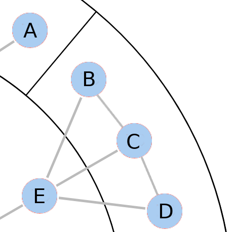

Please read these instructions carefully! You will be tested on them!
Before we start, we strongly recommend you to switch to fullscreen mode.
This is especially useful if you have a small screen (14" or smaller) because the graphics take space.
Please enter fullscreen mode now by pressing (Fn) F11 on your keyboard.
At the end of the study you can exit the fullscreen using the same key.
Icon from www.freepik.com
Imagine you are a space engineer traveling in your spaceship.
You are called to a foreign planet that needs your help.
On the planet, there are many cities which all have a power outage.
The most important thing is to keep their infrastructure alive.
To do so, you will visit the cities and collect energy from emergency generators.
Each city is divided into a variable number of districts, looking a bit like a roulette wheel:
Streets, walls, and hubs
Below you see an example city in more detail.
The districts are separated from one another by black walls.
One can only pass these walls using the grey streets.
Your spaceship lands on the grey center square: the central station.
Your task is to collect energium from the red hubs and bring it to the central station.
The hubs are like emergency generators charging energium units, which are like batteries.
You want as many energium units as possible, however, there is a limit on how many are available at each hub.
The numbers tell you how many units of energium you can get at the hub each time.
This is also indicated by how red they are (white: low energium, dark red: high energium).
Hubs
Everyone needs energium units, so there are many hubs along the streets all over the city.
Some hubs are more effective than others in generating power. But there is one regularity: You get similar amounts of energium at hubs that are directly connected by a street.
It does not matter if a street runs across the walls or within a district, the similarity is the same.
Your task
In the game, you will not see any numbers initially, so you will not know where the best hubs are.
Each day you will explore the city and collect energium on the way. Your task will be to find as much energium as possible in each city.
Overnight the hubs replenish their energium units, so when you visit the same hub again,
it will result in largely the same outcomes, but with minor variations.
You will see how this works later in the tutorial.
Below you see two more city maps to help you understand how the hubs are related.
Again, the hubs directly connected by a street (a straight or a round one) are similar.
Note that the maximum amount of energium you can get from a hub
will also differ between cities, so you will never know for sure if you have found the best hub.
Quiz
Please answer the following questions.
Only if you get each answer correct, you can go on.
Look at the following snippet of a city.

Which of the following hubs are most similar to each other? (two are correct)
What is the maximum number of energium units you can get at a hub?
×
Some of the answers are missing or not correct, please try again.